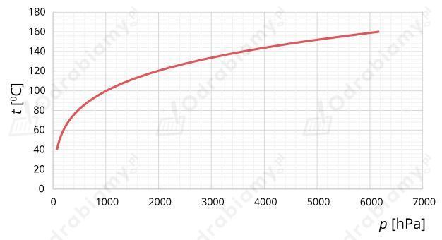

Dane:
Ciepło parowania wody wynosi:
Rozwiązanie:
a)
Włączona grzałka rozgrzewa się bardzo mocno i wydziela duże ilości ciepła. Takie grzałki są zaprojektowane tak, by mogły pracować zanurzone w wodzie i szybko ją podgrzewały. Jeśli jest zanurzona w wodzie to ciepło to może być efektywnie odbierane z niej przez wodę dzięki dużemu ciepłu właściwemu wody. Jeśli grzałka nie jest zanurzona w wodzie to jej temperatura szybko będzie rosnąć i przepali się. Powietrze będzie odbierać ciepło z grzałki dużo gorzej od wody.
b)
Energia elektryczna pobierana przez grzałkę i przekazywana do wody w postaci ciepła będzie równa:
Masa wody jaką możemy odparować wynosi:
Energia potrzebna do odparowania tej wody będzie równa:
Zatem:
Czas gotowania będzie równy:
Dane:
Ciepło właściwe wody wynosi:
Ciepło właściwe stali wynosi:
Szukane:
Rozwiązanie:
Rozgrzana stal będzie ochładzała się i oddawała ciepło, a woda będzie pobierała ciepło ogrzewając się. Końcowa temperatura wody i stali będzie taka sama.
Woda ogrzeje się o:
gdzie jest temperaturą końcową wody, jest temperaturą początkową wody.
Wówczas ciepło, jakie pobierze ze stali możemy przedstawić wzorem:
gdzie jest masą wody, jest ciepłem właściwym wody, jest zmianą temperatury wody.
Otrzymujemy ostatecznie, że:
Stal odda ciepło, w wyniku czego jej temperatura zmieni się o:
gdzie jest początkową temperaturą stali, jest końcową temperaturą stali (taka sama jak wody).
Wówczas ciepło oddane przez stal możemy przedstawić wzorem:
gdzie jest masą stali, jest ciepłem właściwym dla stali.
Zapiszmy równanie bilansu cieplnego i wyznaczmy z niego początkową temperaturę stali:
Podstawiamy dane liczbowe do wzoru:
Wówczas:
Dane:
Ciepło właściwe wody wynosi:
Gęstość wody wynosi:
Szukane:
Rozwiązanie:
Wyznaczmy masę wody jaką chcemy podgrzać:
Energię uzyskaną ze spalania danej objętości gazu ziemnego wyrazimy jako:
Energię potrzebną do podgrzania wody wyznaczymy jako:
Zatem:
Wyznaczmy objętość spalonego gazu:
Masa przedmiotu nie zmienia się pod wpływem jego temperatury.
Rozgrzany przedmiot mógł przekazać ciepło do metalowych elementów, które budują wagę. Na skutek rozszerzalności cieplnej ciał stałych nastąpiło wydłużenie linek, na których zawieszona jest szalka wagi, co spowodowało zmianę odczytu masy ważonego przedmiotu.
Na mocno schłodzonym przedmiocie postawionym na szalce wagi mógł osadzać się szron i mogła skraplać się para wodna, co spowodowało zmianę odczytu masy ważonego przedmiotu.
Temperatura na Księżycu w czasie nocy spada nawet do wartości -180°C. Dodatkowo Księżyc nie ma atmosfery, stąd ciśnienie tam panujące jest prawie zerowe (próżnia). Na Ziemi jesteśmy przyzwyczajeni do widoku wrzącej wody w temperaturze 100°C, ale wiemy również, że temperatura wrzenia wody zależy od zewnętrznego ciśnienia. Im niższe ciśnienie, tym niższa temperatura wrzenia wody.
Wykres zależności temperatury wrzenia wody t od ciśnienia zewnętrznego p ma następujący przebieg:

Widzimy, że przy prawie zerowym ciśnieniu woda od razu zacznie wrzeć mając 20°C. Powstała para wodna zacznie się jednak gwałtownie rozprężać i ochładzać przez co będzie natychmiastowo resublimować w lód.
Energię potencjalną wody wyrazimy jako:
Energię jaką potrzeba, aby ogrzać wodę o jeden stopień Celsjusza wyznaczymy jako:
Zakładamy, że cała energia potencjalna jaką traci spadająca woda zostanie zamieniona na ciepło i spowoduje podgrzanie wody.
Wysokość z jakiej powinna spływać woda będzie równa:
Im większa masa wody, tym większą energię potencjalną gromadzi ona w sobie, co pozwala na dostarczenie większej ilości energii do podgrzania większej masy wody. Stąd końcowa zależność na wysokość z jakiej musi spadać woda nie zależy od masy tej wody.
Energię potencjalną kostki lodu wyrazimy jako:
Energię jaką potrzeba, aby stopić lód wyznaczymy jako:
Zakładamy, że cała energia potencjalna jaką traci spadająca kostka lodu zostanie zamieniona na ciepło i spowoduje jej stopienie.
Wysokość z jakiej powinna spadać kostka będzie równa:
Im większa masa kostki lodu, tym większą energię potencjalną gromadzi on w sobie, co pozwala na dostarczenie większej ilości energii potrzebnej do stopienia większej masy lodu. Stąd końcowa zależność na wysokość z jakiej musi spadać kostka lodu nie zależy od masy tej kostki lodu.
Dane:
Szukane:
Rozwiązanie:
Energię uzyskaną ze spalania gazu ziemnego wyznaczymy jako:
Energię elektryczną zużywaną przez kuchenkę i zamienianą na ciepło wyrazimy jako:
Energia uzyskana z kuchenki i ze spalania gazu ziemnego ma być taka sama:
Wyznaczmy jaką objętość gazu trzeba spalić: